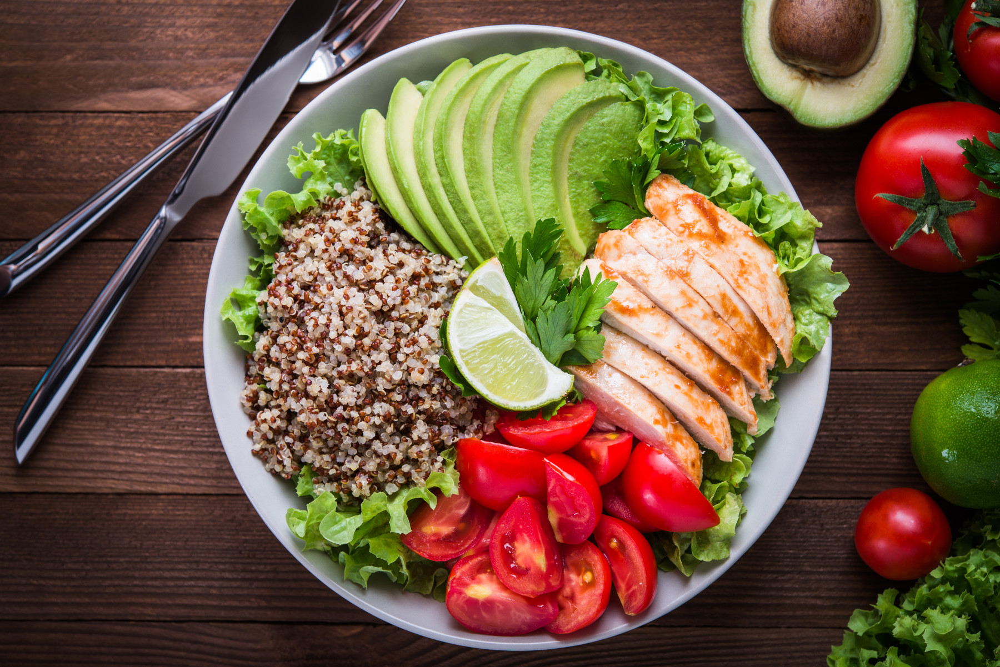
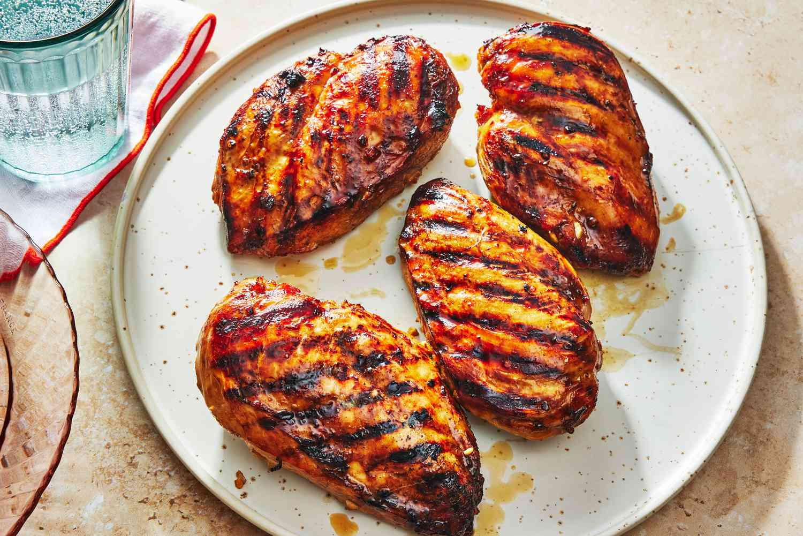
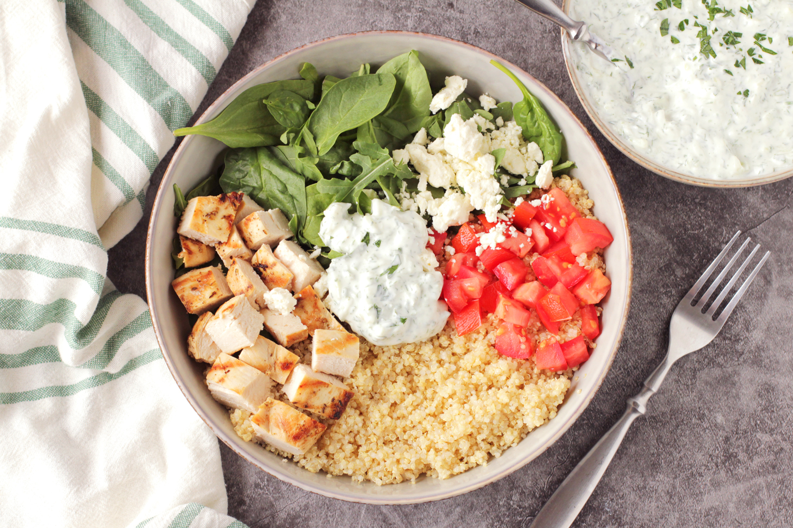
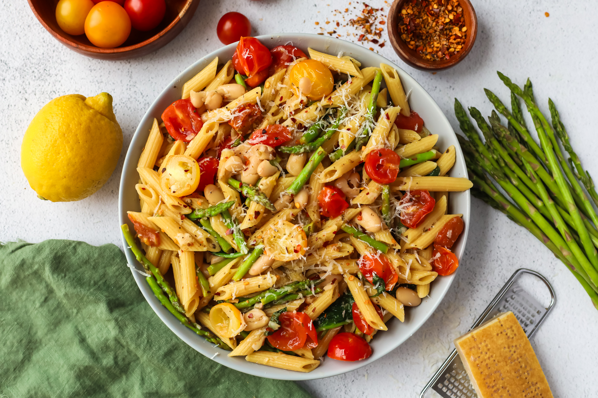

Receptek
Fedezze fel egészséges és ízletes receptjeinket, amelyek segítenek az egészséges életmód fenntartásában.

Egészséges Saláta
Friss zöldségekből készült saláta, amely tele van vitaminokkal és ásványi anyagokkal.

Grillezett Csirke
Ízletes grillezett csirke, amely tökéletes fehérjeforrás az egészséges étrendhez.

Gyümölcs Smoothie
Friss gyümölcsökből készült smoothie, amely tökéletes reggeli vagy uzsonna.

Quinoa Tál
Tápláló quinoa tál, amely tele van fehérjével és rostokkal.

Avokádó Toast
Egészséges avokádó toast, amely tökéletes reggeli vagy uzsonna.

Zöldséges Tészta
Ízletes zöldséges tészta, amely tele van vitaminokkal és ásványi anyagokkal.